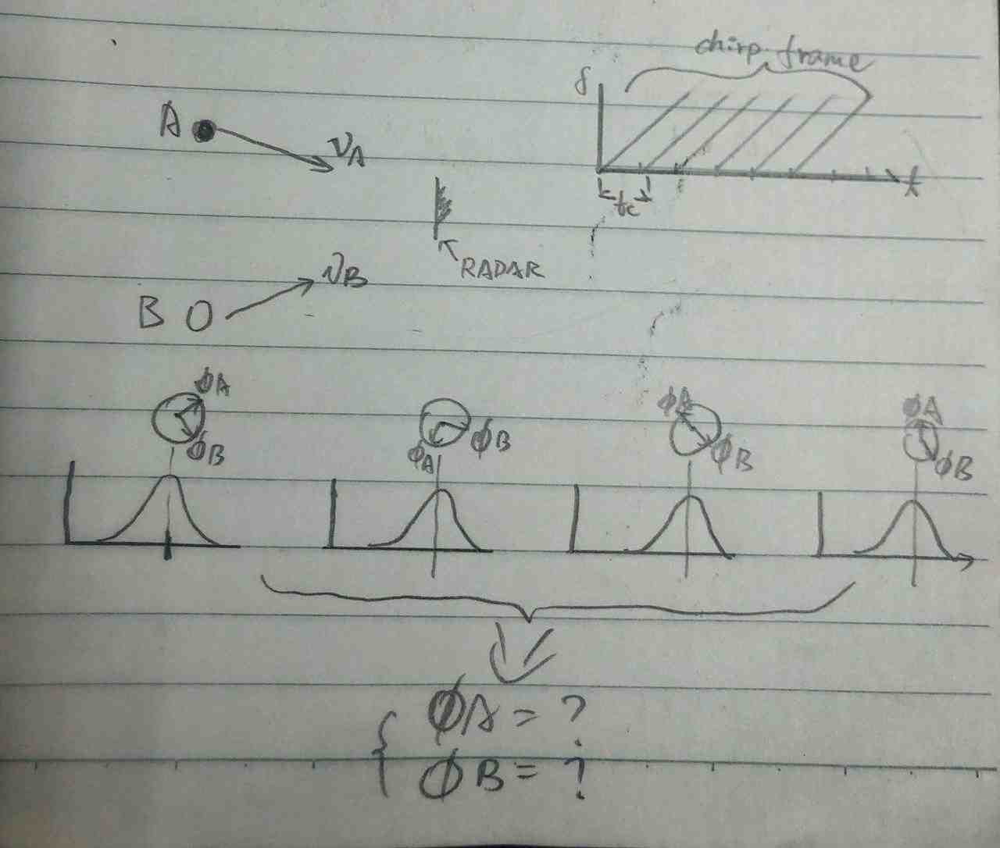
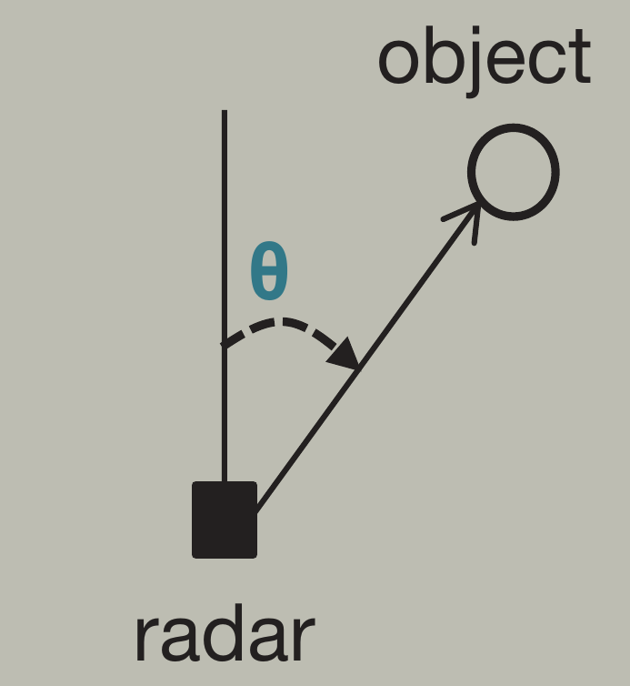
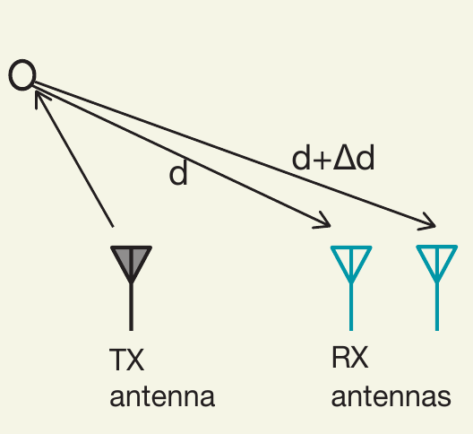
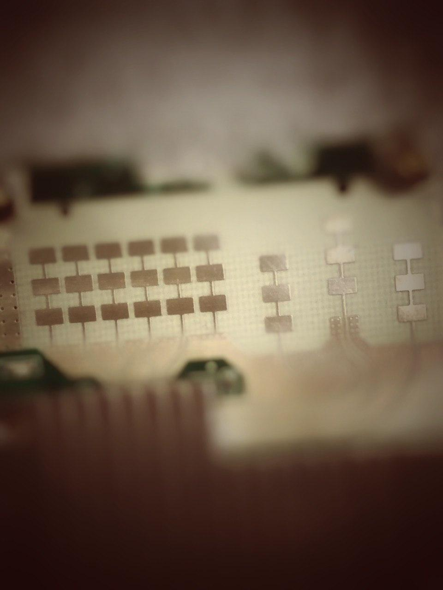

毫米波雷达的基本工作原理 续
前言
在毫米波雷达第二篇进一步介绍了毫米波雷达的内部构成，和基本测距原理。
本番将介绍毫米波雷达测速功能和方位角测定功能的基本原理。
速度测量
单一目标测速
在毫米波雷达第一篇中，提到雷达具有对目标测速的能力加成，以及对目标微小移动的检测能力。
在FMCW雷达技术中，可以通过发射两次间隔为$T_c$的啁啾信号来获取速度信息。
对于两次反射来的信号，通过上一回说的FFT技术来提取其“调性”（中频频峰和相位差）。
因为两次啁啾的时间间隔非常短，就算物体移动很快，在这段微小时间内的位移也不会很大，所以对应的中频频率差别可能小到无法分别。
不过此时它们的相位差将会出现巨大变化，哪怕目标运动速度很低，由此可以计算出速度。
在上一篇中，已经知道相位差：
$\phi = \frac{4\pi d}{\lambda}$
取其微分形式：
$\Delta \phi = \frac{4\pi v T_c}{\lambda}$
这里，假定两次啁啾期间物体运动了1mm（使用5mm波长）， 那么相位差将有144°的巨大差异！
将$v$放在等式最左边，得到：
$v = \frac{\lambda \Delta \phi}{4 \pi T_c }$
由此求得目标速度。
然而，由于速度信息隐藏在相位中，就会带来一个问题：ambiguity（模糊性）， 在关于ToF 番二 中其实也有类似的问题。
只有当$\left| \Delta \phi\right| < \pi$的时候，测得量才有正确的意义。
也就是说，速度$v$需要小于$\frac{\lambda}{4 T_c}$
用公式表达雷达能接受的最快运动速度：
$v_{max} = \frac{\lambda}{4 T_c}$
不过需要说明的是，这里求出目标速度，应该说是目标相对雷达平面移动的速度分量，是径向速度。
多目标测速
然而，这种方式无法应对相对雷达等距的两个以上目标的测速。因为若两个目标相对雷达距离相同，其各自回波延时也相同，因此中频信号中的相位信息会混叠在一起。
为此，人们想出其它的办法：
雷达发射更多的Chirp。
一组N个等时间隔的Chrips序列，被称为一个啁啾帧。
假如有两个与雷达等距的目标A、B，它们的速度分别为$v_a$、$v_b$。
可以想象，中频信号在经过FFT后，会得到N个几乎在同一位置的波峰，但是每个峰都会有一个不同的相位信息。
而每个相位信息都是A、B的相位角的融合。所以需要做的就是将N个相位角，恢复成两个相位角……
说起来有点儿绕，看图吧

怎么做呢？这时数学家又跑出来了，他们说：
把那组和的向量塞进我的黑箱子，我的黑箱子就能还给你两个加数。
我的黑箱子叫：“Doppler FFT” 多普勒-傅里叶变换
这波Doppler FFT操作之后，又会得到两个峰，分别是$\omega_A$和$\omega_B$。
由此得到两个物体分别的速度：
$\begin{cases}
v_A = \frac{\lambda \omega_A}{4\pi T_c}\\
v_B = \frac{\lambda \omega_B}{4\pi T_c}
\end{cases}$
Oh my lady gaga……
如果世间没有数学家，人类就得倒退回每天收集果子的时代，那该多美好呀……
测速分辨率
根据离散傅里叶变换理论可知，当两个离散频率$\omega_1$和$\omega_2$的差，大于$\frac{2\pi}{N}$ 时，就可以被分辨。
而$\Delta \omega = \frac{4\pi v T_c}{\lambda}$
又有 $v_{res} T_f = N T_c$
可以得到速度分辨率$v_{rev} = \frac{\lambda}{2T_f}$
既$\rightarrow$ 雷达速度分辨率与帧时间$T_f$成反比， 帧时间越短，速度分辨率越高。
方位角测定
原理
FMCW雷达可以在其水平面估计反射波角度。这是一种被称为 到达角(AoA) 检测的技
术。

让我想到UWB定位和最新的蓝牙定位技术，也用到了类似的技术。
要使用AoA，需要用到RX天线阵列。目标的反射回波，到达不同的RX天线时，会有一个空间上的距离差异，在中频信号经过FFT或者Doppler-FFT的时候，会看到不同。而这个不同包含了角度的信息。
以最简化的例子

同一个目标回波到达两个RX天线的相位差：
$\Delta \Phi = \frac{2\pi \Delta d}{\lambda}$
根据几何， $\Delta d = l \sin(\theta)$，其中$l\rightarrow$天线间距。
因此得到到达角：
$\theta = sin^{-1}(\frac{\lambda \Delta \phi}{2\pi l})$
带入后会得到 $\theta = \sin(\theta)$的奇怪结果。这被称为非线性近似。
只有当$\theta$较小时，才会更加准确。
雷达视场 FoV
因为AoA使用相位测定， 所以依旧绕不开 $\left| \Delta \phi \right| < 180^\circ$ 的非模糊性问题。
由上面的公式，得到：
$\theta_{max} = \pm sin^{-1}(\frac{\lambda}{2l})$
例如， 如果天线之间间隔$l = \frac{\lambda}{2}$， 那么最大视场角度就是$\pm 90^\circ$
总结
通过三篇blog完整描述了毫米波雷达的特点、基本工作原理。
是一头雾水呢，还是一头雾水？
在后续的文章中，将进行实际的毫米波雷达开发和评估。

敬请期待
to be continued…